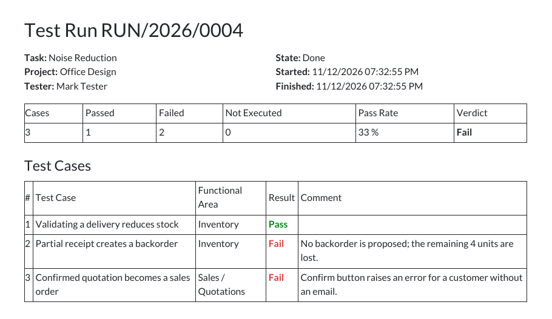

One page per run: who tested what, the summary and the result of every case.

| Group | Access |
|---|---|
| Tester | works on own test runs; creates test cases and requirements; reads areas and tags |
| QA Lead | everything a tester can, plus all runs, reference data and deletion |